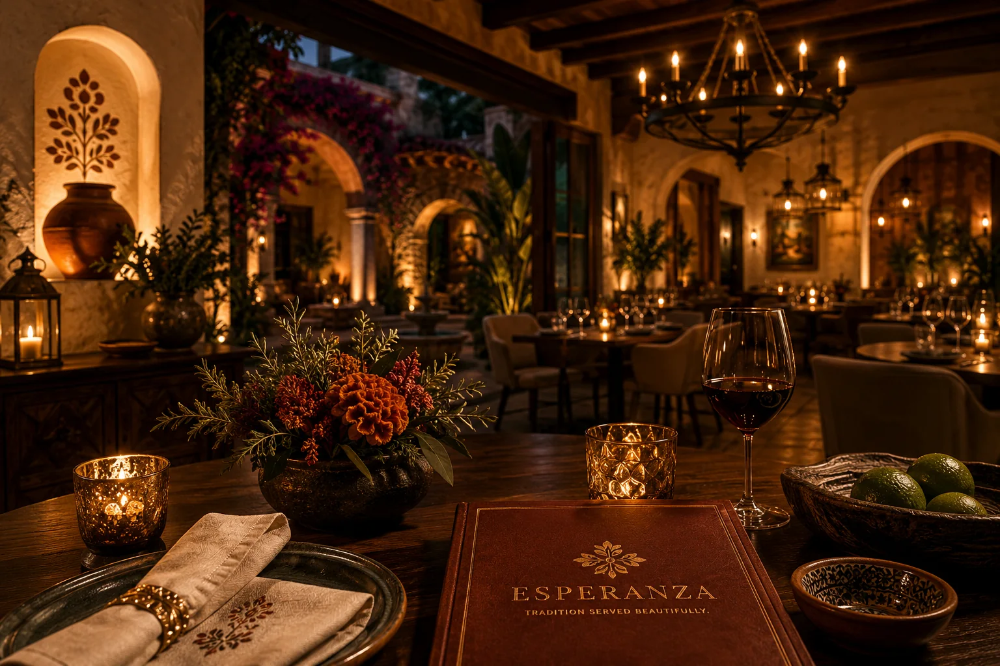
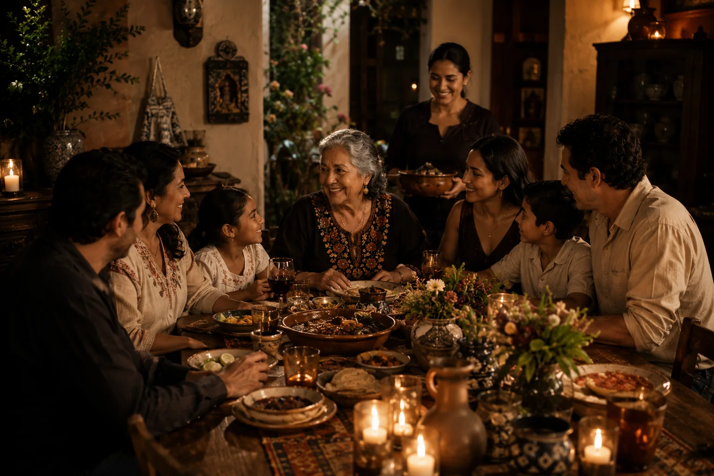
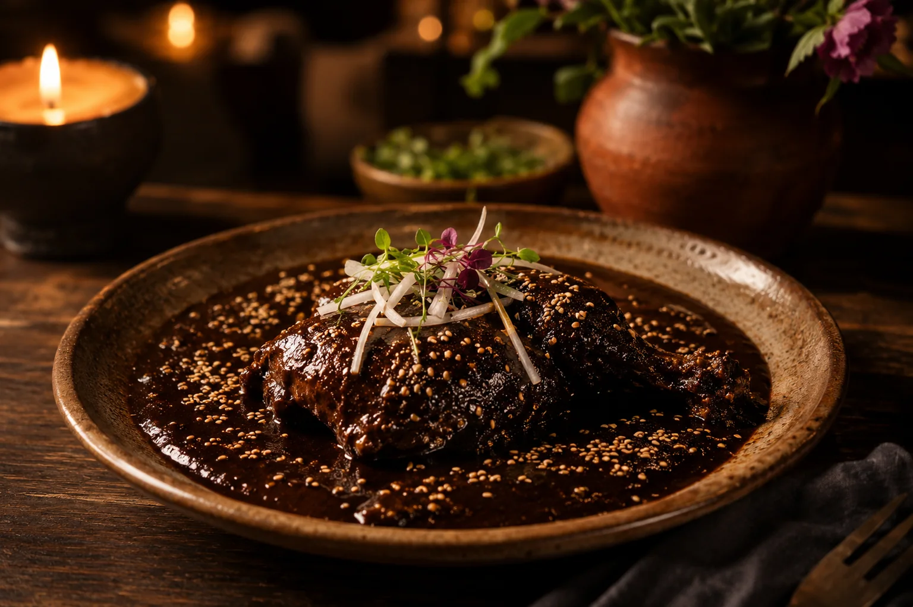
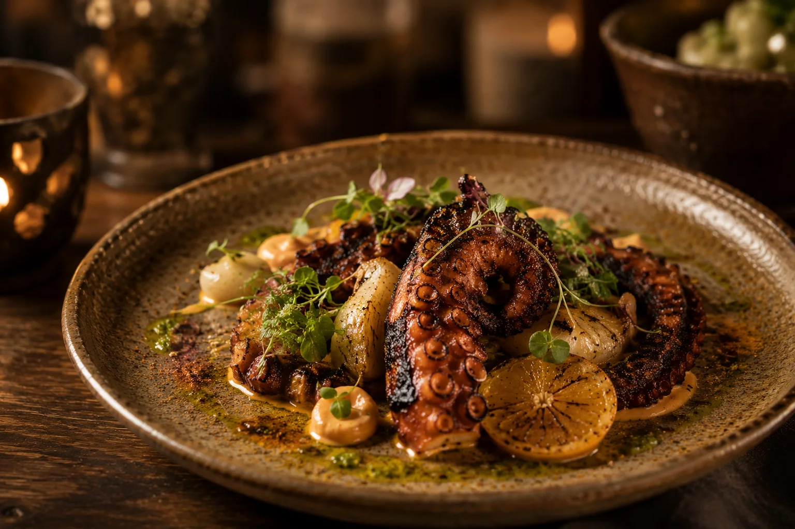
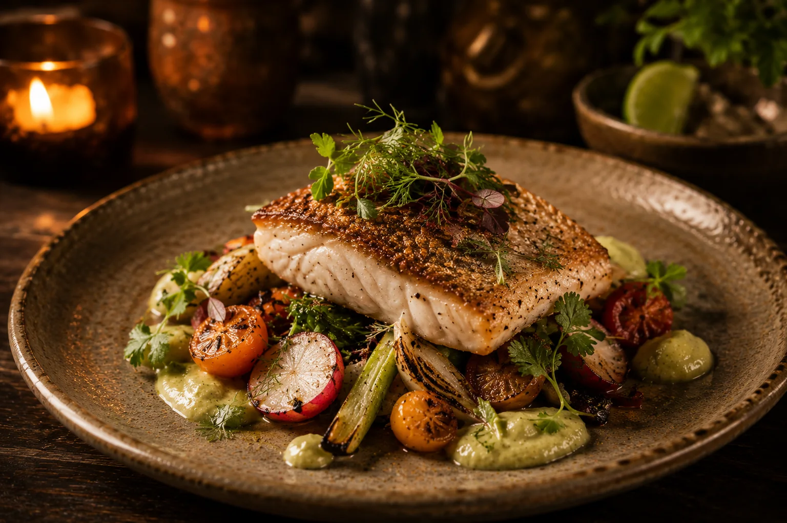
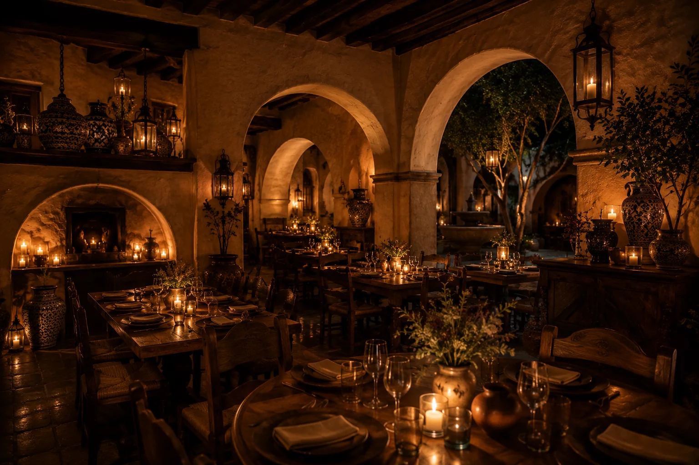
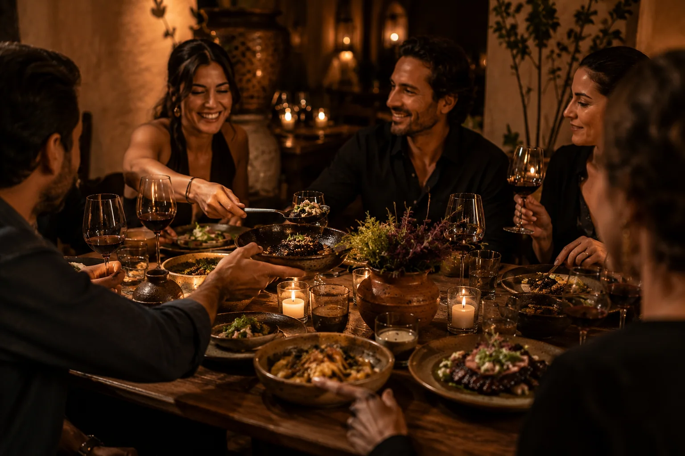
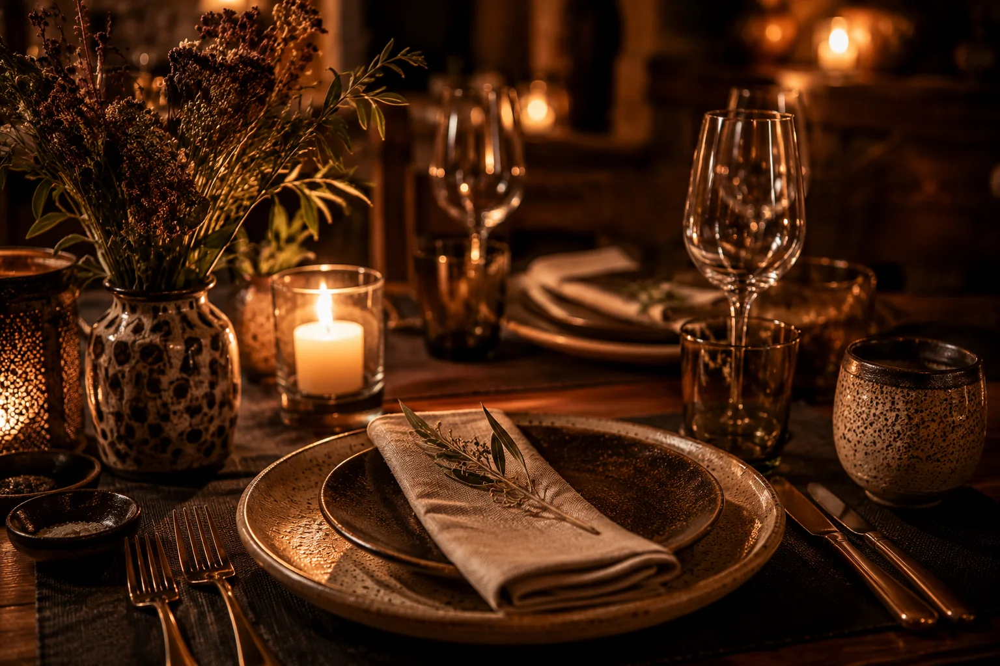

Seasonal Craft
Menus follow the rhythm of the market, balancing Mexican produce with slow-built depth.
San Miguel de Allende
Tradition Served Beautifully. A premium Mexican restaurant inspired by the recipes, warmth, and family traditions of Esperanza, the grandmother behind every gathering.

Family Legacy

Esperanza honors the recipes, rituals, and generosity of the grandmother who inspired the table. Every plate carries the warmth of her family cooking with the polish of a refined dining room.
From hand-ground salsas to seasonal Mexican produce, the menu preserves family tradition through a modern, ingredient-led lens.
Why Guests Return
Menus follow the rhythm of the market, balancing Mexican produce with slow-built depth.
Classic Mexican preparations are guided by Esperanza's recipes, treated with reverence, patience, and restraint.
The experience is polished without losing the generosity of a family table.
Signature Dishes

A slow-crafted mole negro inspired by generations of family cooking and regional tradition.

Wood-fired octopus finished with citrus, herbs, and coastal Mexican flavors.

Fresh seasonal catch prepared with local ingredients and the warmth of traditional hospitality.
Meet the Family
Led by a team devoted to craft and care, the restaurant brings together generations of culinary memory with the relaxed elegance of San Miguel de Allende.
Gallery
Every detail is composed to honor Mexican hospitality with quiet, memorable elegance.



Reservations
Join us for a warm, refined evening of family recipes and Mexican hospitality in San Miguel de Allende.
Reserve a TableGuest Experiences
A few words from those who have gathered at Esperanza's table.
"You can feel the family story in every detail. The food is refined, but the warmth is what stays with you."
- Guest
"Esperanza feels less like a restaurant and more like being welcomed into someone's home."
- Guest
"The recipes feel rooted in tradition while every plate is presented with extraordinary care."
- Guest